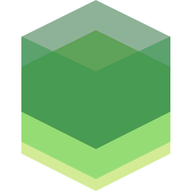

class: center, middle # Offline Web Apps <a href="https://twitter.com" >@kramp</a> - <a href="https://huggingface.co" >huggingface.co</a> --- class: center, middle ## 🕥 Some History 🕐 <iframe width="100%" height="400" src="https://time.graphics/embed?v=1&id=104040" frameborder="0" allowfullscreen></iframe> <div><a href="https://time.graphics/fr/line/104040">timeline</a></div> --- class: center, middle ## from [📄](https://www.debian.org/intro/organization) ➩ [🚀](https://analytics.google.com/analytics/web) --- class: center, middle ## from 💻 to 📱  Mobile vs Desktop Global Market Share --- class: center, middle ## New use cases ## 🛫 🚇 🚣 🛸 🚽 --- class: center, middle ## 📴 no more! --- class: center, middle # Solution ## 🥁 --- class: center, middle ## No 🦄 ### only hard work 👷 --- class: center, middle ### Break early 😠  --- class: center,middle ### Going native 🤮  --- class: center,middle ### Break later 🤯  --- class: center,middle ### ✨ Offline ✨ --- class: center,middle ## Define your strategy <table> <thead> <tr> <th>I don't care</th> <th>Resilancy</th> <th>Disconnected</th> <th>Offline</th> </tr> </thead> <tbody> <tr> <th>🙈</th> <th>😒</th> <th>😏</th> <th>🤩</th> </tr> <tr> <th></th> <th>💰</th> <th>💰💰</th> <th>💰💳💶💸</th> </tr> <tr> <th></th> <th></th> <th>📈</th> <th>📈</th> </tr> </tbody> </table> --- class: center, middle ## Define your target 🎯 ## 💻, 📱, 🏧, 📺 --- class: center, middle ## Mobile first ? ### PWA 💞 --- class: center, middle ## Wide support ? --- class: center, middle ## Architecture ## 🍝 🥞 🍢 --- class: center, middle ### The state is the 🔑  --- class: center, middle ## Workflow 📶🔸📴 🔸 📶 🔀 🔸📴 🔸 📶 🔀 --- class: center, middle ## Always bet on the web ## 🎰 --- class: middle ### AppCache Manifest Support ⭐⭐⭐⭐ - 🚨 Deprecated 🚨 ```txt CACHE MANIFEST # v0.1.1 CACHE: /favicon.ico index.html images/logo.png dist/bundle.js NETWORK: * FALLBACK: /api/ /static.html images/large/ images/offline.jpg ``` ```html <html manifest="https://talk.krampstud.io/appcache.mf"> ``` --- class: middle ### Connectivity Support ⭐⭐⭐⭐ ```js const showStatus = () => console.log( navigator.onLine ? 'online' : 'offline' ); window.addEventListener('online', showStatus); window.addEventListener('offline', showStatus); ``` --- class: middle ### Network info Support 👀 ```js const connection = navigator.connection; connection.addEventListener('change', () => { //ethernet, wifi, cellular, etc. console.log(connection.type); //'slow-2g', '2g', etc. console.log(connection.effectiveType); //in MBps console.log(connection.downlinkMax); }); ``` --- class: middle ### fetch Support ⭐⭐⭐⭐ ```js const res = await fetch(url, { method: 'POST', body: JSON.stringify(data), headers:{ 'Content-Type': 'application/json' } }) ``` --- class: middle ### xhr2 Support ⭐⭐⭐⭐ ```js const request = new XMLHttpRequest(); request.open('PUT', url, true); request.responseType = "blob"; request.addEventListener('load', e => { const revceivedBlob = request.response; }); request.addEventListener('progress' = e => console.log(e.loaded / e.total * 100)) request.addEventListener('abort', () => console.log('canceled') ); request.addEventListener('error', err => console.error(err)); request.addEventListener('timeout', () => console.log('timed out') ); request.send(new Blob()); ``` --- class: middle ```js if (response.status === 0) { //Offline ? } ``` --- class: middle ### Web Sockets Support ⭐⭐⭐⭐ ```js const socket = new WebSocket(url); socket.addEventListener('close', e => { if(e.code === 1001){ //Offine ? } }); ``` --- class: middle ### Service Workers Support ⭐⭐⭐⭐ Flexibility 🚀🚀🚀  --- class: middle ### Service Workers Registration lifecycle  --- class: middle ### Service Workers - Cache API ```js self.addEventListener('fetch', event => { event.respondWith( async () => { const cache = await caches.open('CACHE_ID'); const cached = await cache.match(event.request); if(cached){ i return cached; //cache HIT } //cache MISS const response = await fetch(event.request); //fulfill the cache cache.put(event.request, response.clone()); return response; }); }); ``` --- class: middle ### Service Workers - Background sync Support ⭐ - Most waited 🎅 ```js navigator.serviceWorker .register('./service-worker.js') .then(registration => navigator.serviceWorker.ready) .then(registration => { // register sync button.addEventListener('click', () => { registration.sync.register('data-push'); }); }); ``` ```js self.addEventListener('sync', e => { if(e.tag === 'data-push'){ e.waitUntil(async function push(){ }); } }); ``` --- class: middle ### WebStorage Support ⭐⭐⭐⭐ ```js window.sessionStorage.setItem('date-format', 'YYYY-MM-DD'); const format = window.sessionStorage.getItem('date-format'); window.sessionStorage.removeItem('date-format'); ``` --- class: middle ### IndexedDB Support ⭐⭐⭐⭐ ```js const request = window.indexedDB.open("user-store", 1); request.onerror = err => console.error(err); request.onupgradeneeded = e => { const store = evt.currentTarget.result.createObjectStore('contacts', { keyPath: 'id', autoIncrement: true }); store.createIndex('id', 'id', { unique: true }); store.createIndex('login', 'login', { unique: false }); store.createIndex('email', 'email', { unique: true }); store.createIndex('firstname', 'firstname', { unique: false }); store.createIndex('lastname', 'lastname', { unique: false }); }; ``` --- class: middle ```js const request = window.indexedDB.open("user-store", 1); request.onerror = err => console.error(err); request.onsuccess = function(evt) { const db = this.result; const transaction = db.transaction(["contacts"], "readwrite"); const objectStore = transaction.objectStore("contacts"); objectStore.add({ id : '12', login : 'mrrobot', email : 'mr.robot@protonmail.com', firstname : 'Elliot', firstname : 'Alderson' }); } ``` --- class: middle ### Quotas Support ⭐⭐ ```js navigator.storage.estimate().then( estimate => { console.log(estimate.usage / estimate.quota).toFixed(2)); }); ``` --- class: center, middle ## Tools - data sync   --- class: center, middle ## Tools   --- class: center, middle ## Tools   [localforage](https://localforage.github.io/localForage/) [minimongo](https://github.com/mWater/minimongo)